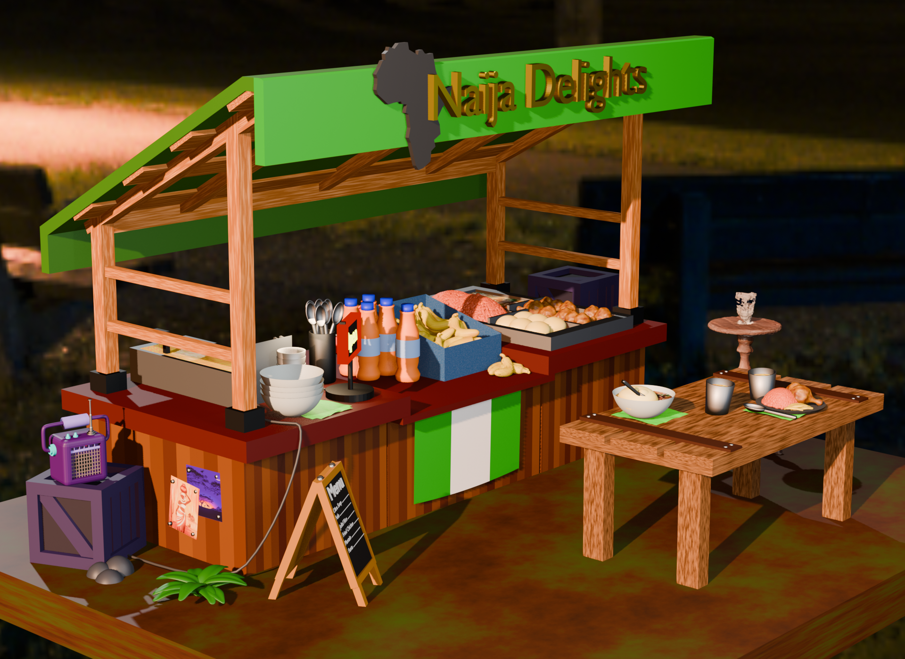
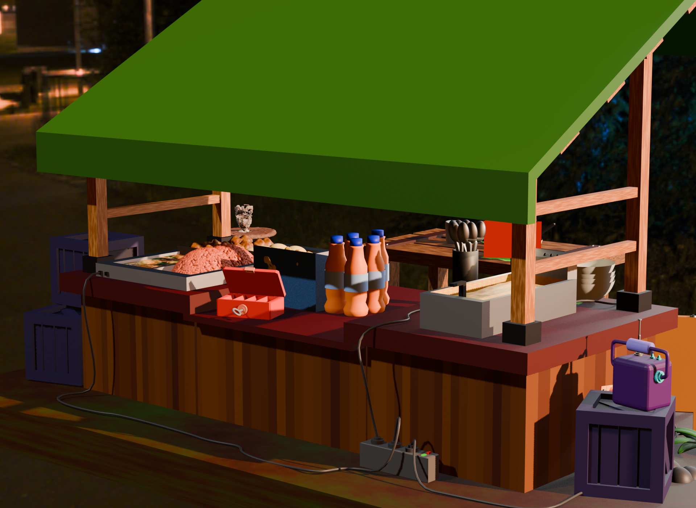
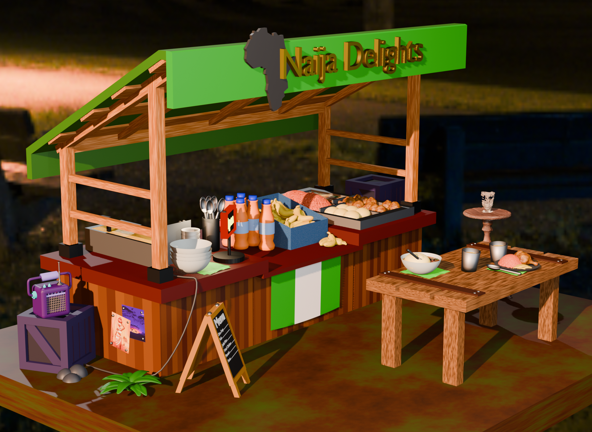
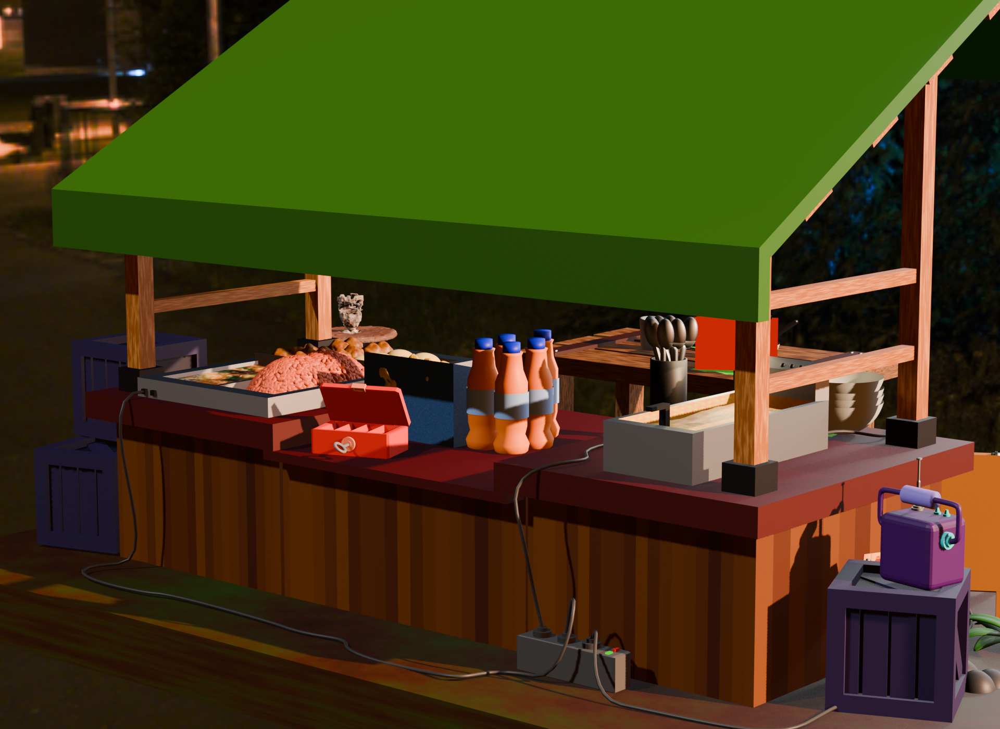

About Me
School:
- Visual Merchandising (2016)
- Digital Design (2024)
- Digital Experience Design (2026)
Skills:
Hey there! I'm Audrey, a 28 year old Digital Experience Design student based in Belgium with a big passion for all things creative. Growing up, I spent most of my time drawing, painting, and crafting - heavily inspired by the cartoons I loved. People always told me to "do something with my art", but I wasn't sure what that meant. After highschool, I put creativity aside and worked in retail... Until Covid-19 hit. During lockdown, I reconnected with my creative side - and stumbled upon a YouTube tutorial about coding. That was the moment it all clicked! I'd found a way to combine creativity with technoligy. Today, I specialize in front-end development using HTML, CSS and JavaScript to build responsive, user-friendly websites. I design using Figma, Illustrator and Blender, and I've explored some backend basics to better understand full workflows and work more effectively in teams. I love experimenting with new tools and always try to bring a fresh skill into every project - wether it's for school or personal growth. I'm currently open to intership opportunities where I can grow, collaborate, and contribute to real-world digital experiences.
Services
UI/UX Design:
I create user-friendly designs that are both easy to use and visually appealing.
Web/ App Development:
I build responsive, fast-loading websites and apps using HTML, CSS, and JavaScript.
3D Design:
I create 3D models and animations using Blender to bring ideas to life.


 


